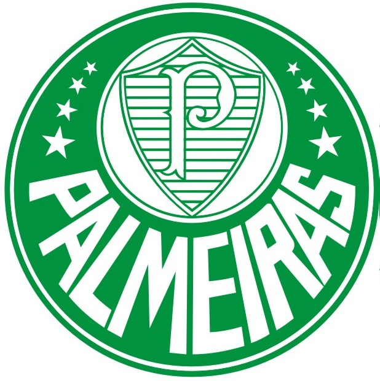
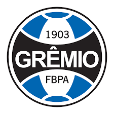
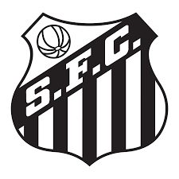
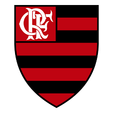
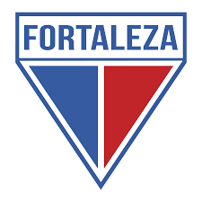
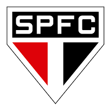
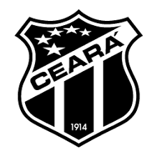
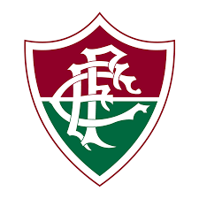

(Para mais informações de cada time, clique na imagem)
Palmeiras (O melhor tá?!)
A Sociedade Esportiva Palmeiras, conhecido popularmente como Palmeiras é um clube poliesportivo brasileiro da cidade de São Paulo, capital do estado homônimo. Foi fundado em 26 de agosto de 1914 e suas cores, presentes no escudo e bandeira oficial, são o verde e branco. O vermelho, presente desde sua fundação em 1914, foi excluído durante a Segunda Guerra Mundial, por pressão do governo nacional, na mesma reunião que formalizou a mudança de nome de Palestra Itália para Palmeiras.O Palmeiras é a equipe brasileira com o maior número de títulos de abrangência nacional conquistados, obtendo a maioria das competições oficiais que disputou criadas no País, inicialmente pela Confederação Brasileira de Desportos e, a partir de 1980, pela Confederação Brasileira de Futebol. O alviverde possui 15 conquistas deste porte, com destaque maior para seus dez títulos do Campeonato Brasileiro (atual recordista): 1960, 1967, 1967, 1969, 1972, 1973, 1993, 1994, 2016 e 2018. Além destes campeonatos, o Palmeiras já venceu no país as Copas do Brasil de 1998, 2012, 2015 e de 2020 e a Copa dos Campeões de 2000, competições também organizadas pela entidade máxima do futebol brasileiro.
Grêmio
Grêmio Foot-Ball Porto Alegrense (conhecido apenas por Grêmio e cujo acrônimo é FBPA) é um clube de futebol brasileiro da cidade de Porto Alegre, no Rio Grande do Sul, fundado em 15 de setembro de 1903 por Candido Dias da Silva. É considerado um dos maiores clubes do Brasil e da América do Sul. Suas cores são azul, preto e branco. O clube tem como alcunhas Imortal Tricolor, Tricolor dos Pampas, Tricolor Gaúcho, Rei de Copas e Clube de Todos.
Santos
Santos Futebol Clube é um clube poliesportivo brasileiro da cidade de Santos, São Paulo. Foi fundado em 14 de abril de 1912, suas cores iniciais seriam o branco, azul e dourado, mas um ano após a sua fundação, ficou decidido que as cores do clube passariam a ser branco e preto. Manda as suas partidas no Estádio Urbano Caldeira, mais conhecido como Vila Belmiro. Seus maiores rivais no futebol são o Corinthians, com quem disputa o Clássico Alvinegro, o Palmeiras, com quem disputa o Clássico da Saudade, e o São Paulo, com quem disputa o San-São.
Atlético-MG
O Clube Atlético Mineiro (conhecido apenas por Atlético e cujo acrônimo é CAM) é um clube brasileiro de futebol sediado na cidade de Belo Horizonte, Minas Gerais. Considerado um dos mais populares clubes de futebol do Brasil, possui a décima maior torcida do país. Foi fundado em 25 de março de 1908 por um grupo de estudantes, tem como suas cores tradicionais o preto e o branco. Contudo, o clube teve como primeiro nome Athlético Mineiro Football Club. Seu símbolo e alcunha mais popular é o Galo, mascote oficial no final da década de 1930.
Flamengo
O Clube de Regatas do Flamengo (mais conhecido simplesmente como Flamengo) é uma agremiação poliesportiva brasileira com sede na cidade do Rio de Janeiro, capital do estado de mesmo nome. Fundado no bairro de mesmo nome para disputas de remo em 17 de novembro de 1895, tornou-se um dos clubes mais bem-sucedidos e populares do esporte brasileiro, especialmente pelo futebol. Tem como suas cores tradicionais o vermelho e o preto e como seus maiores rivais esportivos o Vasco da Gama, o Fluminense e o Botafogo.
Internacional
O Sport Club Internacional (mais conhecido como Internacional ou Inter de Porto Alegre e popularmente pelo apelido de Colorado) é um clube multiesportivo brasileiro com sede na cidade de Porto Alegre, capital do Rio Grande do Sul. Foi fundado em 4 de abril de 1909, pelos irmãos Poppe, com o objetivo de ser uma instituição democrática e sem preconceitos. Tem como suas cores o vermelho e o branco e seus torcedores são conhecidos como colorados.
Fortaleza
Fortaleza Esporte Clube é um clube poliesportivo que está sediado na cidade de Fortaleza, no Nordeste do Brasil. Foi fundado em 18 de outubro de 1918, por Alcides Santos, um dos maiores esportistas cearenses, que se apaixonou pelo futebol durante o período em que estudou no College Stella, na Suíça.
São Paulo
São Paulo Futebol Clube é uma associação esportiva brasileira da cidade de São Paulo, capital do estado homônimo. Foi fundado em 25 de janeiro de 1930, tendo interrompido suas atividades em maio de 1935, e as retomado em dezembro do mesmo ano. No futebol, é um dos clubes mais bem sucedidos do Brasil, sendo que, dentre seus principais títulos, destacam-se os três Mundiais, as três Copas Libertadores, a Copa Sul-Americana de 2012 e os seis Campeonatos Brasileiros.
Ceará
Ceará Sporting Club é um clube poliesportivo brasileiro. Sua sede situa-se em Fortaleza, na Região Nordeste do Brasil. O clube foi fundado na noite do dia 2 de junho de 1914, pelas ruas do histórico bairro do Centro da Capital. Seu mascote é o vovô, não por ser o time mais velho da capital cearense, mas por Meton de Alencar Pinto, então presidente do clube, por ao receber os atletas juvenis do América Futebol Club, os tratou como seus "netinhos".
Fluminense
Fluminense Football Club é uma agremiação poliesportiva e cultural sediada no bairro de Laranjeiras, zona sul da cidade do Rio de Janeiro, no Brasil, fundada em 21 de julho de 1902. É uma sociedade civil de caráter desportivo, que tem como principal atividade o futebol.